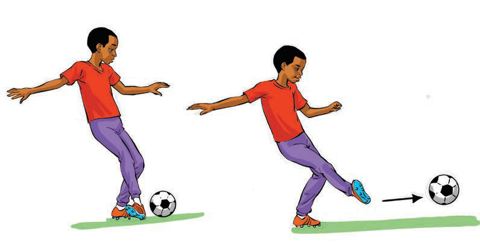

(b) Receiving the ball
This is the skill of receiving and controlling the ball using the foot, thigh, chest or head. The main goal is to have complete control of the ball and be able to continue the game by passing or shooting. Receiving the ball correctly requires the skill of using various parts of the body, such as the foot, thigh or chest.